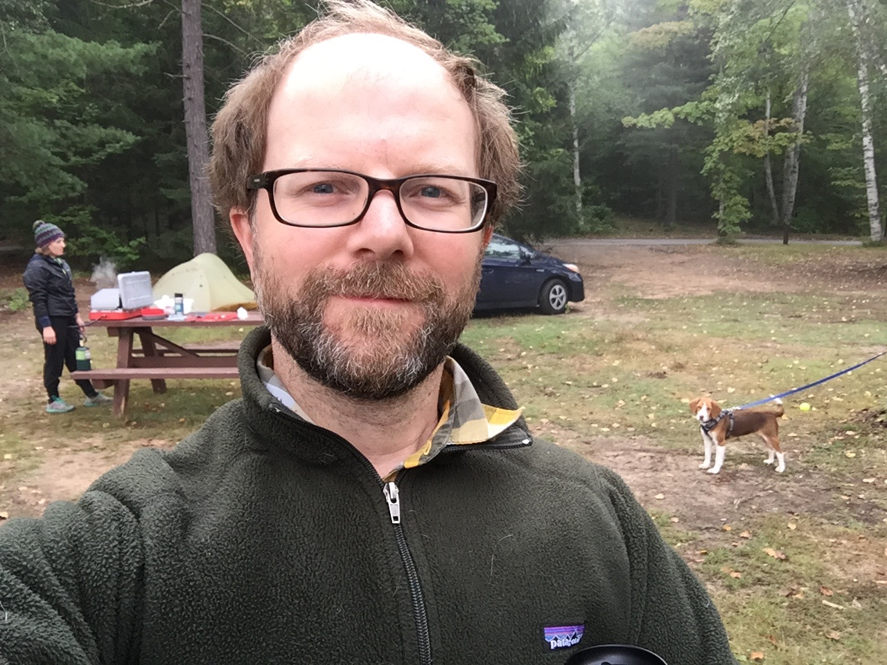
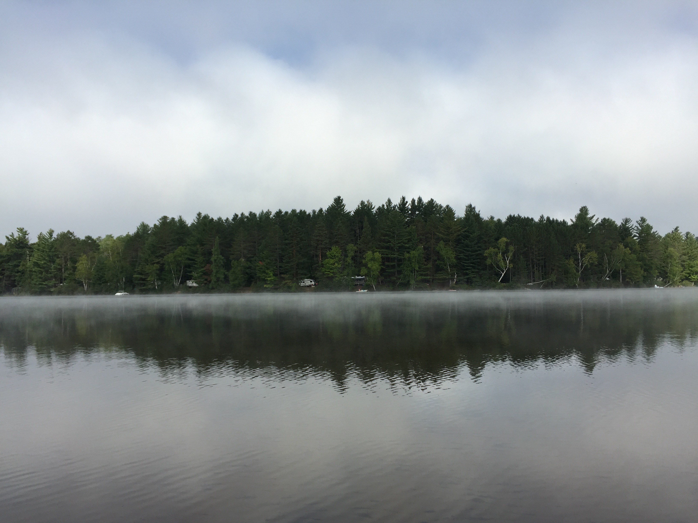
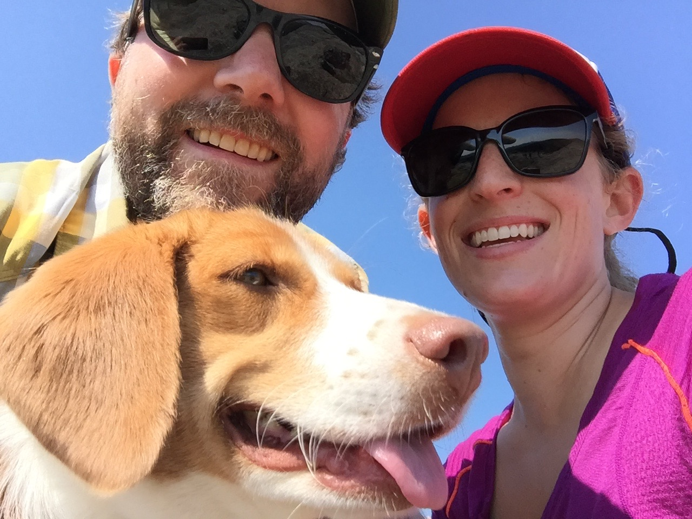
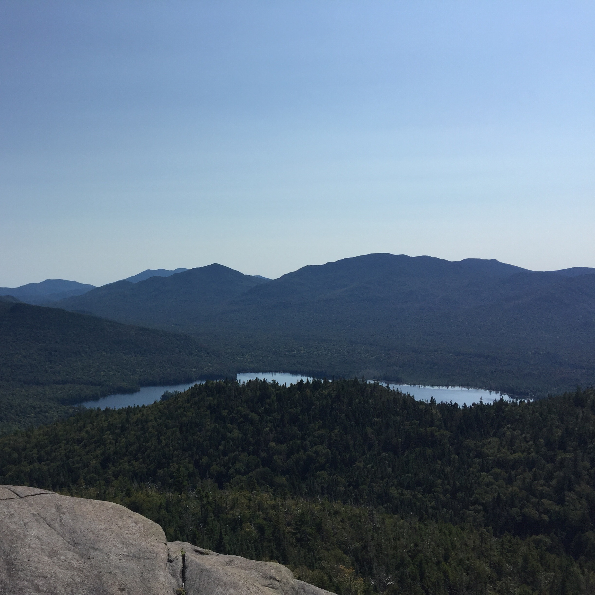
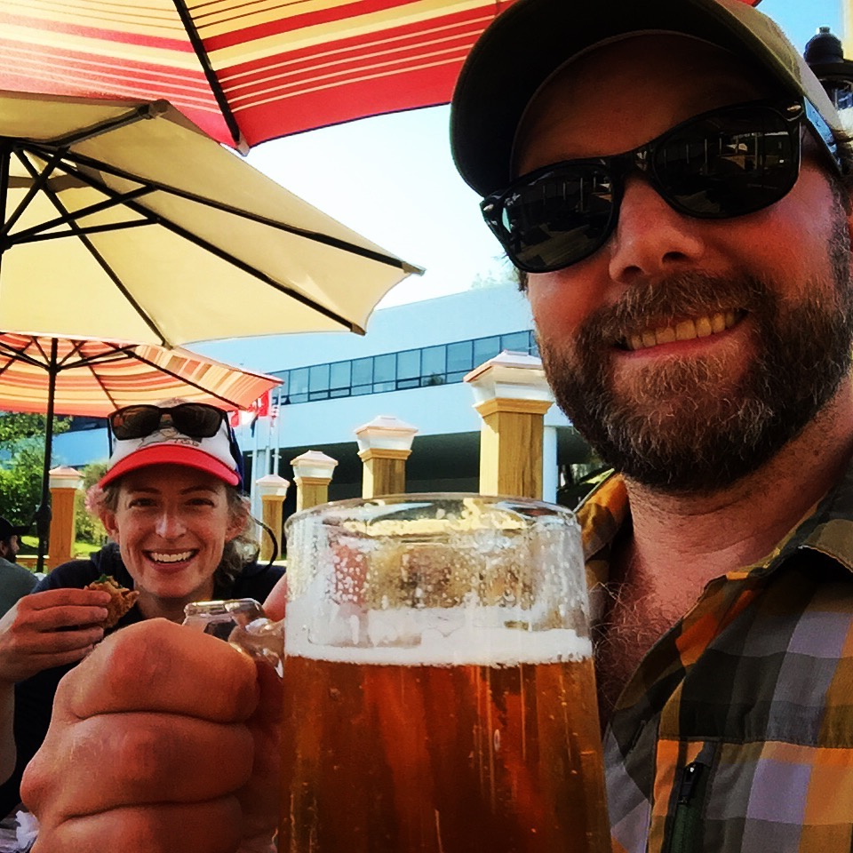
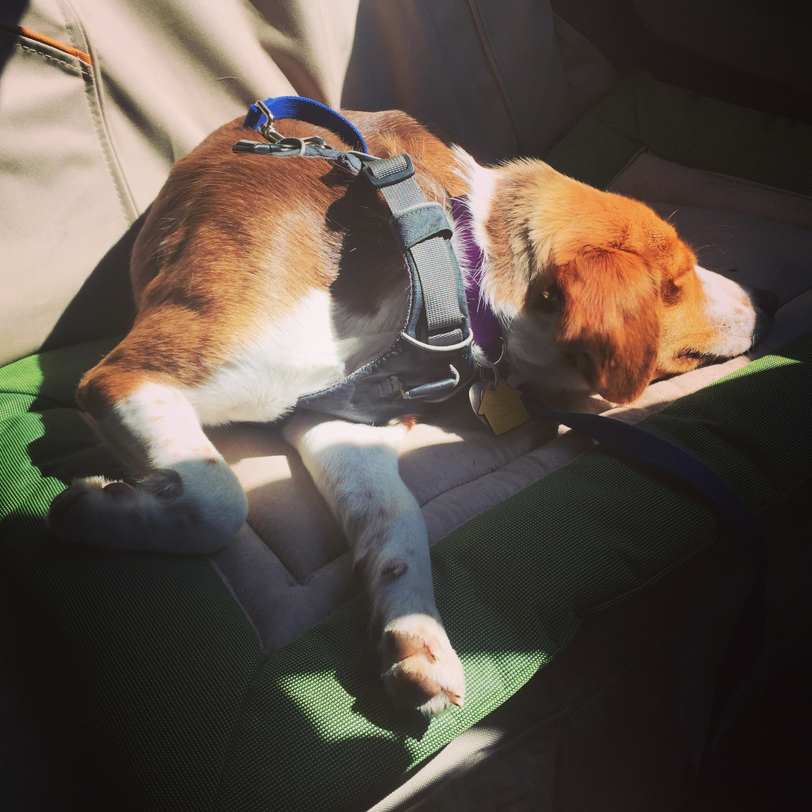

Adirondacks
The end of summer. Days are noticeably shorter, nights cooler, and leaves begin to fall. In the past, autumn has been my favorite season, and I actually look forward to winter. So, typically I'd be excited about fall, but with the quick transition from graduate school to beginning my postdoc I've been wanting to hold onto summer, to enjoy the long, sunny days, and spend more time at the beach. Trouble is, I feel drawn to lab, anxious to get results and gain expertise in my new area of research. But with my desire to squeeze a little more out of summer, and Sarah starting a new teaching job after Labor Day, we decided to head for the mountains. Wait, there are mountains in New York?
Of course there are mountains in New York! I've even been to them once when I was a kid, but due to recent bias from living near the Cascade then Wasatch Mountains, I didn't really consider the Adirondacks to be mountains. More rolling hills, with lakes. Beautiful in my mind, for sure, but not mountainous. Well, there are mountains, and turns out they're a lot of fun.
We skipped town Friday afternoon and headed to the north country. Our destination was a state campground west of Saranac Lake. We expected traffic since it was Labor Day weekend and though it was heavy it wasn't awful, but we were looking at 7 - 8 hours in the car. We made a quick detour to Saratoga Springs to walk the dog, fill up on coffee, and to show Sarah one of my favorite small cities in New York.
We cut west through the Adirondacks, passing by Long Lake then Tupper Lake and felt worlds away from hustle and bustle of home as we drove through small settlements, lakeside camps, and finally to our campsite for the weekend at Fish Creek Pond. There are hundreds of campsites here and we expected it to be full, which it was, and nearly all RVs. We were in a small two-person tent and have no desire for an RV, although we talked a little about buying an old campervan or converting a minivan as an adventure vehicle. Regardless, we arrived at the site as the sun was setting and had a small fire as we set up camp.
One of the strangest things I've experienced while camping happened on our first night. It began to rain, or more accurately, it sounded like it began to rain. I woke up in the very early hours of the morning so confused, the weather forecasts had predicted clear skies and little chance of rain. But drops were hitting the tent creating the unmistakable sound of light rain. And when the morning came and we finally clambered out of the tent, everything was wet, like it had rained. There was also a thick fog, and we now believed, what sounded like rain was actually a very heavy mist that collected in the valley and around the lake where we camped while the air above was cold and clear. The mist was so thick it either mizzled, or condensed on the trees before falling to the ground. By mid morning the mist had burned off and the day, as well as the rest of the weekend, was clear and sunny. Nothing got all that wet and so the "rain" didn't affect the weekend, but it was strange.

Camp in the morning

View across the lake from camp site
We planned two hikes for the trip, one up Cascade and Porter peaks, the other a loop up and around Big Slide. Cascade and Porter was a moderate half-day hike, which we did on Saturday. The view from Cascade was magnificent. The trail was quite crowded but we expected crowds over the holiday weekend, so it didn't bother us. We attempted Big Slide on Sunday but it turns out that we hadn't planned appropriately. The trailhead to Big Slide is extremely busy because it is the sendoff for multiple trails into the high peaks district and there was limited parking. We saw signs on the way up that the lot was full and when we arrived there was a state trooper enforcing order. There's a shuttle that runs to the trailhead from a few miles away, which would have been a fine option if we had planned for that, but due to the day slipping away from us we decided to find a shorter hike elsewhere and return better prepared for Big Slide another day. We actually tootled around the beautiful Keene Valley for a bit, going to the farmers market and the Mountaineer gear shop. Then we headed toward Ampersand mountain and on our way stopped to wander around the town of Saranac Lake. Ampersand was a great hike rewarded with incredible views from the summit.

Pano from top of Cascade

All smiles on the Cascade summit

Beautiful views from Ampersand
All of that hiking inspired a deep hunger and thirst in the belly. We found the Pickled Pig in Lake Placid Saturday after hiking Cascade and Porter. We just stopped in for a beer the first night, but on Sunday we went back for dinner and beer. The brisket sandwich that I had was amazing and Sarah's fish fry was also excellent. They had an exceptional beer selection, it was not a long list, but all high quality beer and cider. I indulged in a few Sixpoint Resin double IPAs (9.1% ABV and over 100 IBUs!) and Sarah had a Naked Flock hard cider. We had fun walking around Lake Placid and people watching on the busy holiday weekend.

Food and drinks at the Pickled Pig in Lake Placid
Monday morning we woke up and headed back toward home. I was concerned about deteriorating driving conditions as we approached Long Island due to Hermine, but the storm ended up having little impact besides some stiff winds Monday night into Tuesday.
In the end, it was a great trip for me. I was really unprepared for the end of summer and not looking forward to shorter days and cooler temps. But after the trip to the Adirondacks, I really had a mental shift, and now feel content to be transitioning to autumn and the winter ahead.
